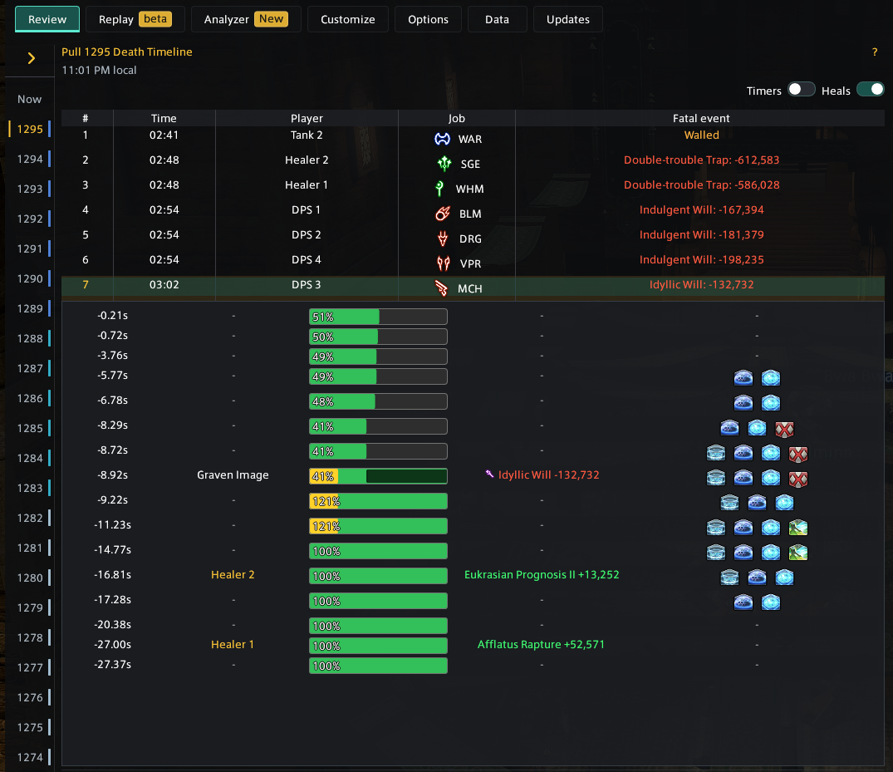

Start here
Turn a wipe into an answer.
Better Deaths records duty pulls, organizes the deaths, and keeps the fatal hit, HP, mitigation, statuses, and movement together. This guide takes you from your first recorded pull to deeper review tools.
Onboarding
Your first death review
Finish or reset a pull, then follow the information from broad context to the exact fatal event.
-
1
Open Better Deaths.
Use
/bdor/betterdeaths. The newest completed pull appears in Review. -
2
Choose a pull.
The pull list keeps completed pulls in local history. Current Pull shows the attempt that is still in progress.
-
3
Select a death.
The death timeline tells you who died, when, their job, and the fatal event. Select a row to open that player's details.
-
4
Read Summary first.
Check HP and shields before the fatal event, overkill, damage type, active effects, and expired mitigation.
-
5
Trace the lead-up.
Use the event rows to follow damage, healing, HP changes, and statuses back from the KO. Open What-if or Replay when you need more context.
